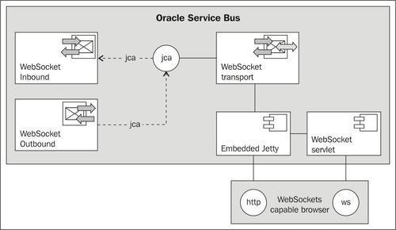
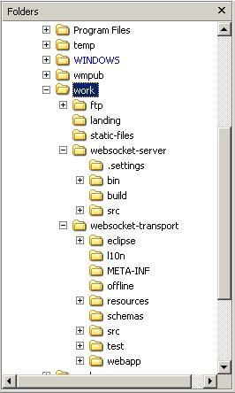
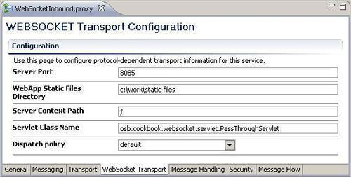
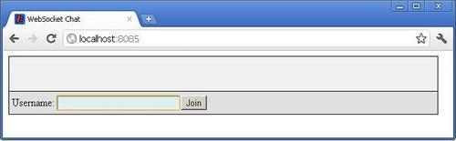
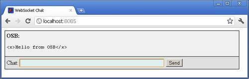

In this recipe, we will install and use a custom transport. We do not actually write a custom transport because it would take way too many pages to describe the implementation from scratch. But we have implemented a fully functional WebSocket transport and provide it with this book.
Our WebSocket transport implementation is derived from the socket transport example that comes with the OSB installation. It is located in MW_HOME\Oracle_OSB1\samples\servicebus.
If you are keen on implementing your own custom transport, you may want to look at the source code as a starting place and adapt it according to your own requirements.
How does our custom WebSockets transport basically work? The transport communicates with a local WebSocket servlet, which in turn is accessed by a WebSocket-capable browser. Since the WebLogic server does not support WebSocket servlets yet, the transport starts an embedded Jetty server which runs the WebSocket servlet and handles WebSocket requests. The WebSocket servlet communicates with the transport interface classes, which in turn interact with business and proxy services through the WebLogic Integration transport manager framework.

The WebSocket transport implementation is divided into two projects and deployment units:
The Jetty part of the WebSocket transport is built and deployed with Apache Maven. Even though Maven can be executed through the command line, it is sometimes easier to have Maven support built in to the IDE. This is especially true when modifying dependencies in pom.xml, which require build path-updates in Eclipse OEPE.
We can easily add Maven support to Eclipse, by performing the following steps in Eclipse OEPE:
M2Eclipse into the Name field and http://download.eclipse.org/technology/m2e/releases into the Location field.We build the WebSocket transport from the sources provided with this book. Copy the folders static-files, websocket-server, and websocket-transport from \chapter-5\getting-ready\implementing-websockets-transport\ to a working folder. In the following instructions, we use C:\work. The file structure of the work folder should look as shown in the following screenshot:

Import the two projects websocket-server and websocket-transport into Eclipse OEPE:
c:\work into the field and hit Enter.Now, we need to configure the run configuration, which allows the execution of the build scripts from the IDE. In Eclipse OEPE, perform the following steps:
pom.xml in the websocket-server project and select Run As | 2 Maven build.... websocket-server install into the Name field. clean install into the Goals field.Now, some configuration files must be adjusted. In Eclipse OEPE, perform the following steps:
pom.xml file in the websocket-server project and modify the property mw.home to reflect the path of the OSB installation. build.properties file in the websocket-transport project and modify the properties wls.username and wls.password to reflect your environment.The Ant build script of the WebSocket transport heavily relies on environment variables specific to the WebLogic server. Thus it is easier to execute this script in a command shell than configure it in the IDE.
cmd.exe on Windows). MW_HOME\user_projects\domains\osb_cookbook_domain\bin\setDomainEnv.cmd. C:\work\websocket-transport.The WebSocket Transport project references a variable MW_HOME, which must be set in Eclipse OEPE, if not already done.
MW_HOME into the Name field.Now, everything is ready to build and deploy the custom transport. There might still be some errors in Eclipse OEPE. They will disappear after the projects are built using Ant and Maven.
First we will build the websocket-server project. This component contains the embedded Jetty server and an example WebSocket servlet. The JAR containing everything will be copied to the<domain_dir>\lib folder. All the JAR files in this folder will automatically be added to the system classpath when the WebLogic server is starting up.
In Eclipse OEPE, perform the following steps:
In the prepared command shell window, perform the following task (OSB server must be started):
ant clean build stage deploy.If the deploy step was successfully completed once, it must not be repeated on later executions of the build. So, if we modify the transport and want to deploy it again, we can just execute ant clean build stage and restart both the OSB server and Eclipse OEPE.
The WebSocket transport and the embedded Jetty server are now installed and ready to be used both on the OSB server and from within Eclipse OEPE.
In the next step, we create the proxy and business service implementing the communication with the servlet that was installed with the WebSocket-server component. First, we create the proxy service which just logs the incoming messages from the WebSocket-servlet.
In Eclipse OEPE, perform the following steps:
using-websocket-transport. proxy and business folder. proxy folder, create a new proxy service and name it WebSocketInbound. /pass into the Endpoint URI field. 8085 into the port field. C:\work\static-files in our case, into the WebApp Static Files Directory field. Leave everything else on default.
RequestPipelinePair. LogStage. $body into the Expression field.In the Service Bus console log window some messages will appear indicating that the Jetty server has been started:
OsbCookbookServletContext.createServer().run() start of method
2011-08-05 18:01:18.703:INFO::jetty-7.x.y-SNAPSHOT
2011-08-05 18:01:18.796:INFO::started o.e.j.s.ServletContextHandler{/,null}
OsbCookbookServletContext.addServlet(): called with osb.cookbook.websocket.servlet.PassThroughServlet and path /pass
2011-08-05 18:01:18.828:INFO::Started SelectChannelConnector@0.0.0.0:8085 STARTING
OsbCookbookServletContext.run start requested
In a WebSocket-capable browser, such as Google Chrome, perform the following steps:
http://localhost:8085/.
PassThroughServlet$PassThroughSocket.onOpen() PassThroughServlet$PassThroughSocket.onMessage(): John:has joined! <Aug 5, 2011 6:24:35 PM CEST> <Warning> <ALSB Logging> <BEA-000000> < [PipelinePairNode1, PipelinePairNode1_request, stage1, REQUEST] <soapenv:Body xmlns:soapenv="http://schemas.xmlsoap.org/ soap/envelope/"> <msg>John:has joined!</msg> </soapenv:Body>>
The inbound communication is now finished. We can start sending messages via the chat application. The proxy service will be invoked and executed for every single message.
Keep the browser window open as we will use it again in a few minutes.
To communicate back to the user connected via the WebSocket servlet we need to implement a business service using our new WebSocket transport. In Eclipse OEPE, perform the following steps:
business folder, create a new business service and name it WebSocketOutbound. /pass into the Endpoint URI field and click Add. C:\work\static-files in our case, into the WebApp Static Files Directory field. . 8085 into the port field.Now, we can invoke the business service to send a message back to the browser. Make sure that there was no timeout in the chat browser window. If so, join again.
In the Service Bus console perform the following steps:
<x>Hello from OSB</x> into the Payload field and click Execute.
The example WebSocket transport implementation starts one single Jetty instance that is shared among all services using the WebSocket transport. This instance deploys one single JEE web-application, which is also shared. Thus, all services must define the same values for Server Port, WebApp Static Files Directory and Server Context Path. This is not very user friendly, but it simplifies the example transport implementation.
Every service defines a WebSocket servlet by providing the Servlet Class Name on the WebSocket Transport tab and the Endpoint URI on the Transport tab. The Endpoint URI is used as the instance identifier of the servlet. There is one servlet instance for every URI.
More than one business service may register for the same Endpoint URI, but it is only possible to register one proxy service for a certain Endpoint URI. This is not a limitation of the OSB transport framework, but a design choice. Every incoming message starts the proxy service in its own thread. If it would be possible to register more than one proxy service on the same servlet, there would be multiple threads processing the same message, which would not be very efficient.
There is no request-response pattern available with our WebSocket transport. This would not make a lot of sense because normally both ends of the connection, server and client, will send messages individually in any order and at any time.
One characteristic of the WebSocket protocol, similar to the HTTP protocol, is that the client initiates a connection. However, both ends may end a connection. The example transport never ends the connection. Timeouts occur after 30 seconds, which is the default HTTP timeout in Jetty.
There are a few main classes which implement the larger part of the WebSocket transport. On the web server side, there is the WebSocket servlet class osb.cookbook.websocket.servlet.PassThroughServlet, which—as its name suggests—passes messages from the WebSocket client to the WebSocket transport and vice versa. Messages are converted back and forth by this servlet, from String on the web server side to org.apache.xmlbeans.XmlObject on the transport side.
The other important class on the web server side is osb.cookbook.websocket.OsbCookbookServletContext. It mainly creates and starts the embedded Jetty server, adds servlets configured in the WebSocket transport, and passes messages between the transport and the servlets. The latter is implemented in the methods update() and notifyOSB().
On the transport side, there are lot of classes that implement all the tooling around Eclipse OEPE and Service Bus console. Two other classes are responsible for receiving and sending messages. The class which is handling the sending of messages from OSB is com.bea.alsb.transports.websocket.WebSocketOutboundMessageContext. Its method send() communicates via OsbCookbookServletContext with the web server. The class responsible for receiving messages is com.bea.alsb.transports.websocket.WebSocketTransportReceiver. Its receive() method is called by the OsbCookbookServletContext's notifyOSB() method.
This call is performed by reflection to avoid cyclic dependencies of the involved classes (the web server side does not have to know the transport classes). The method receive()stores the message in a linked list and immediately returns. The WebSocketTransportReceiver class has started a thread which listens on the linked list and schedules a WebSocketInboundMessageContext for every incoming message. With this context, the proxy